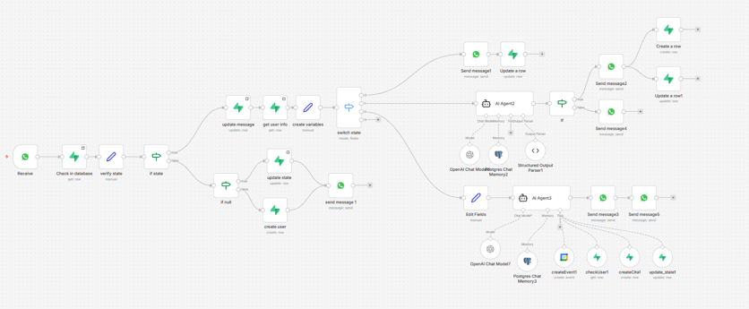
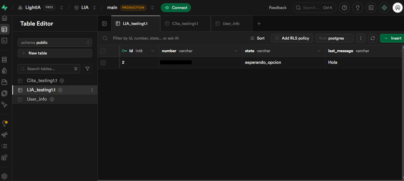
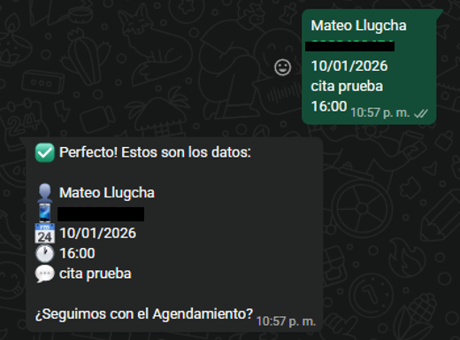
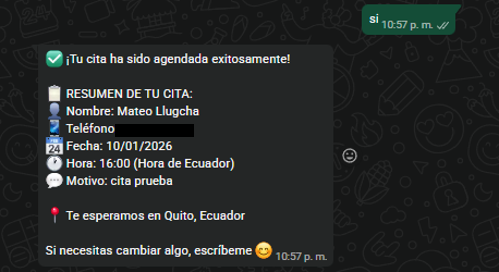
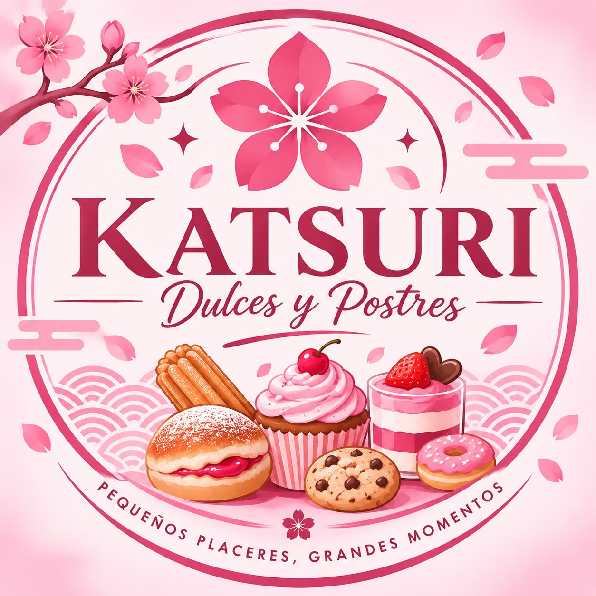
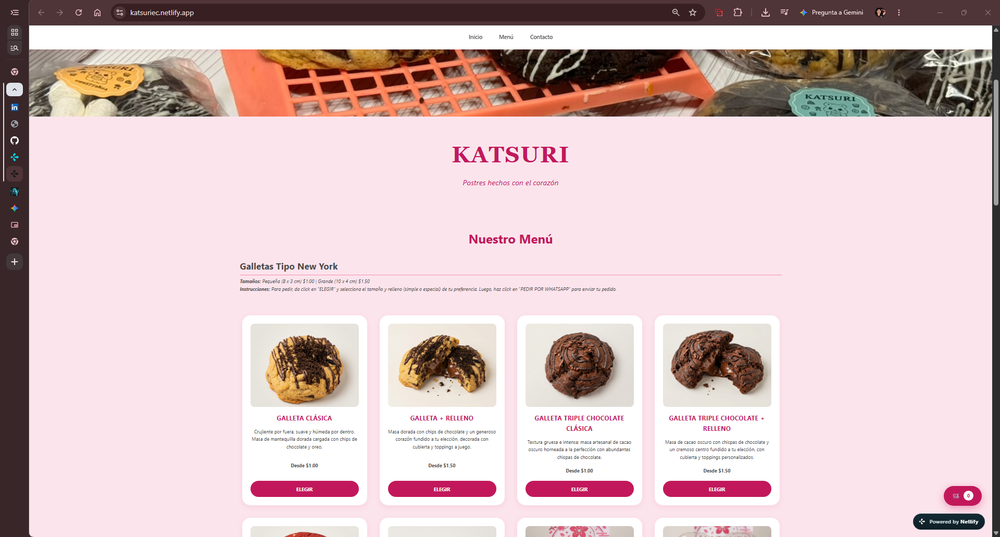
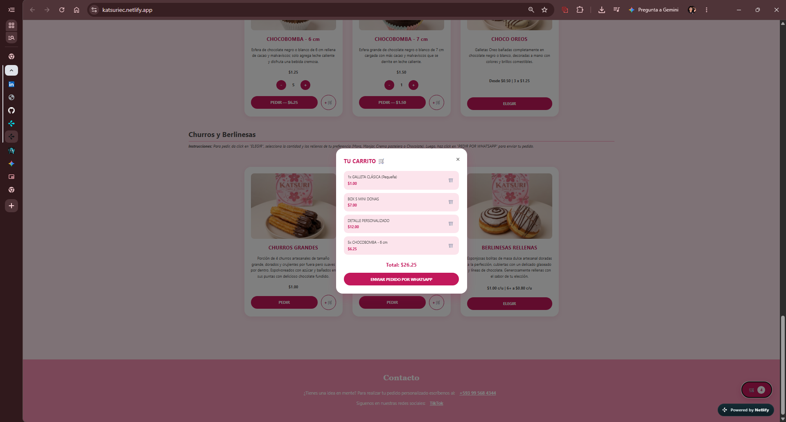

Explora algunos de mis proyectos más destacados.
LIA (Asistente Virtual con IA)




Chatbot inteligente integrado con la API de WhatsApp para automatizar la atención y responder consultas de usuarios en tiempo real mediante procesamiento de lenguaje natural.
GPT-4.1
n8n
Supabase
WhatsApp API
KATSURI - Catálogo y Pedidos Web



Aplicación web responsiva para repostería artesanal con galería dinámica, modales interactivos para personalizar postres, carrito de compras y envío automático de pedidos a WhatsApp.
HTML5
CSS3
JavaScript
Automatización de Respaldos Corporativos
Script desarrollado en Python e integrado con Cobian Backup para automatizar la ejecución y gestión de copias de seguridad corporativas a nivel nacional.
Python
Cobian Backup
Redes & TI
Proyecto Corporativo